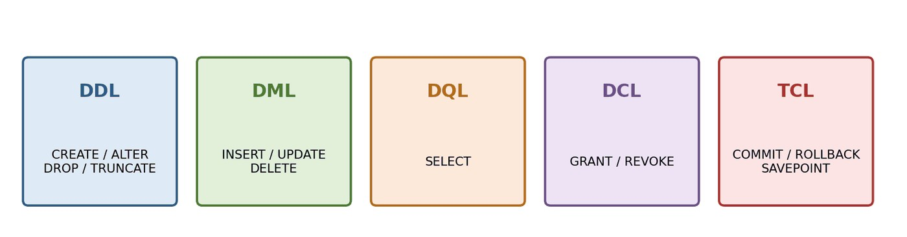
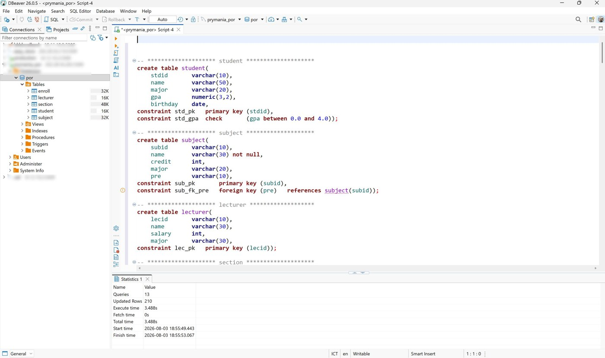
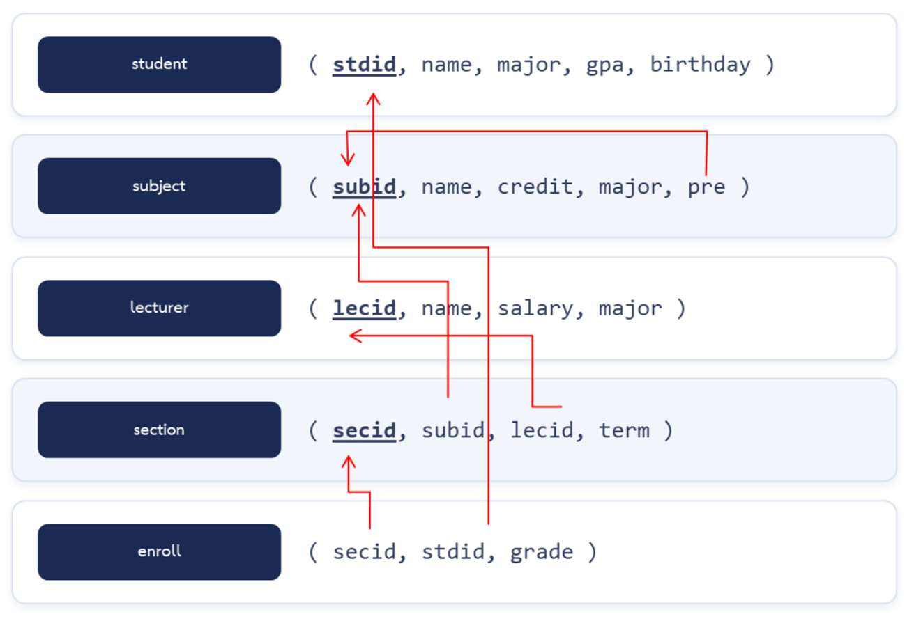
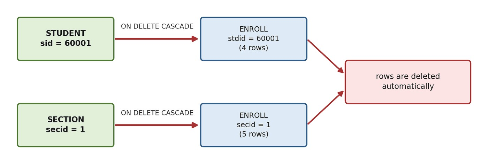

บทที่ 4 · ภาษา SQL: การสร้างตารางและคำสั่งจัดการข้อมูลพื้นฐาน
ประเภทคำสั่ง SQL ชนิดข้อมูล CREATE TABLE ข้อกำหนดบังคับ คีย์นอก ALTER/DROP และ INSERT · UPDATE · DELETE
- อธิบายประเภทของคำสั่ง SQL และเลือกชนิดข้อมูลได้เหมาะสม
- เขียน CREATE TABLE พร้อมข้อกำหนดบังคับ และอธิบายผลของคีย์นอก + ON DELETE ได้
- เขียน ALTER TABLE, DROP TABLE, TRUNCATE ได้
- เขียน INSERT, UPDATE, DELETE ได้อย่างถูกต้องและปลอดภัย
สร้างตารางและข้อมูลกรณีศึกษาให้พร้อมก่อน โดยรันสคริปต์ใน ภาคผนวก ก (หรือดาวน์โหลด prymania_DBLabScript.sql) — ทุกตัวอย่างในบทนี้รันบนข้อมูลชุดนั้น ผลลัพธ์ที่แสดงเป็นผลจริงจาก MySQL 8.4
4.1 ความเป็นมาและประเภทของคำสั่ง SQL
SQL (Structured Query Language) พัฒนาที่ IBM ต้นทศวรรษ 1970 (ชื่อเดิม SEQUEL) เป็นมาตรฐาน ANSI (1986) และ ISO (1987) ล่าสุด ISO/IEC 9075:2023 — เป็นภาษาเชิงประกาศ (Declarative) บอกแค่ “ต้องการอะไร” ไม่ต้องบอก “หาอย่างไร”

| กลุ่ม | ชื่อเต็ม | คำสั่งหลัก | หน้าที่ |
|---|---|---|---|
| DDL | Data Definition Language | CREATE, ALTER, DROP, TRUNCATE | นิยาม/แก้โครงสร้าง |
| DML | Data Manipulation Language | INSERT, UPDATE, DELETE | เพิ่ม แก้ ลบข้อมูล |
| DQL | Data Query Language | SELECT | แสดงข้อมูล |
| DCL | Data Control Language | GRANT, REVOKE | กำหนดสิทธิ์ |
| TCL | Transaction Control Language | COMMIT, ROLLBACK, SAVEPOINT | ควบคุมทรานแซกชัน |
คำสั่ง SQL ไม่สนตัวพิมพ์เล็ก/ใหญ่ แต่ชื่อตารางบน MySQL ลินุกซ์แยกตัวพิมพ์ (student ≠ STUDENT) — เซิร์ฟเวอร์ของมหาวิทยาลัยเป็นลินุกซ์ จึงควรพิมพ์ชื่อตารางเป็นตัวเล็กตามที่สร้างไว้เสมอ
จัดกลุ่ม:
(ก) TRUNCATE TABLE enroll
(ข) DELETE FROM enroll
(ค) GRANT SELECT ...
(ง) ROLLBACK
(จ) ALTER TABLE student ADD ...
(ก) DDL
(ข) DML
(ค) DCL
(ง) TCL
(จ) DDL — สังเกตว่า TRUNCATE เป็น DDL แม้จะลบข้อมูลเหมือน DELETE
4.2 ชนิดข้อมูลใน MySQL
| กลุ่ม | ชนิด | คำอธิบาย | ตัวอย่างในกรณีศึกษา |
|---|---|---|---|
| จำนวนเต็ม | TINYINT | -128 ถึง 127 (1 ไบต์) | — |
| INT | ±2,147,483,647 | credit, salary, secid | |
| BIGINT | 8 ไบต์ | — | |
| ทศนิยม | DECIMAL(p,s) / NUMERIC | ทศนิยมแบบตายตัว p หลักทั้งหมด s หลักหลังจุด | gpa numeric(3,2) |
| FLOAT / DOUBLE | ทศนิยมลอยตัว คลาดเคลื่อนได้ | — | |
| ข้อความ | CHAR(n) | ยาวคงที่ | grade char (= CHAR(1)) |
| VARCHAR(n) | ยาวไม่เกิน n ใช้เนื้อที่ตามจริง | name varchar(50) | |
| TEXT | ข้อความยาวมาก | — | |
| วันเวลา | DATE | YYYY-MM-DD | birthday |
| DATETIME | YYYY-MM-DD HH:MM:SS | — | |
| TIMESTAMP | อ้างอิงเขตเวลา ปรับอัตโนมัติได้ | — | |
| อื่น ๆ | BOOLEAN | เก็บเป็น TINYINT(1) | — |
| ENUM('a','b') | เลือกได้ค่าเดียวจากรายการ | — |
ใช้ DECIMAL แทน FLOAT สำหรับเกรดเฉลี่ยและจำนวนเงินเสมอ เพราะ FLOAT เก็บค่าโดยประมาณ ผลรวมอาจคลาดเคลื่อน
เลือกชนิดข้อมูล
(ก) เลขบัตรประชาชน 13 หลัก
(ข) ราคาสินค้า
(ค) วันเวลาที่บันทึกรายการ
(ง) เพศ
(จ) รายละเอียดสินค้า
(ก) CHAR(13) — ยาวคงที่ และไม่ใช้ตัวเลขเพราะไม่เอาไปคำนวณ และอาจขึ้นต้นด้วย 0
(ข) DECIMAL(10,2)
(ค) DATETIME หรือ TIMESTAMP
(ง) ENUM('male','female','other') หรือ CHAR(1) + CHECK
(จ) TEXT
4.3 การสร้างฐานข้อมูลและตาราง

ต้องเลือกฐานข้อมูลของตนเองก่อนเสมอ (คลิกขวา → Set active หรือเลือกจากช่องด้านบน SQL Editor) ไม่เช่นนั้นจะได้ error No database selected — รันคำสั่งด้วย Ctrl+Enter หรือรันทั้งสคริปต์ด้วย Alt+X
CREATE DATABASE IF NOT EXISTS std_66011200
CHARACTER SET utf8mb4
COLLATE utf8mb4_unicode_ci;
USE std_66011200;utf8mb4 รองรับภาษาไทยและอิโมจิครบถ้วน รูปแบบทั่วไปของ CREATE TABLE:
CREATE TABLE ชื่อตาราง (
ชื่อคอลัมน์1 ชนิดข้อมูล [ข้อกำหนดระดับคอลัมน์],
ชื่อคอลัมน์2 ชนิดข้อมูล [ข้อกำหนดระดับคอลัมน์],
...
[CONSTRAINT ชื่อข้อกำหนด ข้อกำหนดระดับตาราง]
);ตาราง student ในสคริปต์กรณีศึกษา:
create table student(
stdid varchar(10),
name varchar(50),
major varchar(20),
gpa numeric(3,2),
birthday date,
constraint std_pk primary key (stdid),
constraint std_gpa check (gpa between 0.0 and 4.0));ตรวจโครงสร้างที่สร้างแล้วด้วย DESCRIBE
DESCRIBE student;
| Field | Type | Null | Key | Default | Extra |
|---|---|---|---|---|---|
| stdid | varchar(10) | NO | PRI | NULL | |
| name | varchar(50) | YES | NULL | ||
| major | varchar(20) | YES | NULL | ||
| gpa | decimal(3,2) | YES | NULL | ||
| birthday | date | YES | NULL |
จากผล DESCRIBE ข้างบน
(ก) ทำไมคอลัมน์ stdid มี Null = NO ทั้งที่ไม่ได้เขียน NOT NULL
(ข) gpa แสดงเป็นชนิดอะไร
(ก) เพราะเป็น PRIMARY KEY ซึ่งห้าม NULL โดยอัตโนมัติ (Entity Integrity)
(ข) decimal(3,2) — MySQL ถือว่า NUMERIC เป็นชื่อเดียวกับ DECIMAL
4.4 ข้อกำหนดบังคับ (Constraint)
กฎที่ DBMS ตรวจทุกครั้งที่เพิ่มหรือแก้ข้อมูล — บังคับใช้กับทุกช่องทาง จึงน่าเชื่อถือกว่าตรวจในโปรแกรม
| ข้อกำหนด | ความหมาย | ตัวอย่าง |
|---|---|---|
| PRIMARY KEY | ห้ามซ้ำ ห้าม NULL | constraint std_pk primary key (stdid) |
| NOT NULL | ห้ามว่าง | name varchar(30) not null (subject) |
| UNIQUE | ห้ามซ้ำ (NULL ได้) | unique (subid, lecid, term) (section) |
| DEFAULT | ค่าปริยาย | credit int default 3 |
| CHECK | ตรวจเงื่อนไข | check (grade in ('A','B','C','D','F')) |
| FOREIGN KEY | อ้างอิง PK ตารางอื่น | foreign key (subid) references subject(subid) |
| AUTO_INCREMENT | รันเลขอัตโนมัติ | secid int auto_increment |
CHECK มีผลจริงตั้งแต่ MySQL 8.0.16 รุ่นก่อนหน้ารับคำสั่งแต่ไม่ตรวจ — ตรวจรุ่นด้วย SELECT VERSION();
4.4.1 คีย์นอกและการกระทำเมื่อข้อมูลต้นทางเปลี่ยน
| ตัวเลือก | เมื่อลบ/แก้ข้อมูลต้นทาง | เหมาะกับ |
|---|---|---|
| RESTRICT (ค่าปริยาย) | ปฏิเสธ ถ้ายังมีข้อมูลอ้างอิง | ข้อมูลหลัก เช่น รายวิชา (subject.pre) |
| CASCADE | ลบ/แก้ตามไปด้วย | ข้อมูลลูก เช่น การลงทะเบียน |
| SET NULL | ตั้งค่า FK เป็น NULL | ความสัมพันธ์ไม่บังคับ เช่น อาจารย์ที่ปรึกษา |
| NO ACTION | เหมือน RESTRICT ใน MySQL | ตามมาตรฐาน SQL |
ตาราง section และ enroll ในสคริปต์ของเรา:
create table section(
secid int AUTO_INCREMENT,
subid varchar(10),
lecid varchar(10),
term varchar(6),
constraint sec_pk primary key (secid),
constraint sec_fk_sub foreign key (subid) references subject(subid) on delete cascade,
constraint sec_fk_lec foreign key (lecid) references lecturer(lecid) on delete cascade,
constraint sec_uk unique (subid, lecid, term));
create table enroll(
secid int,
stdid varchar(10),
grade char,
constraint enroll_pk primary key (secid, stdid),
constraint enroll_fk_sec foreign key (secid) references section(secid) on delete cascade,
constraint enroll_fk_std foreign key (stdid) references student(stdid) on delete cascade,
constraint enroll_grade check (grade in ('A', 'B', 'C', 'D', 'F')));ต้องสร้างตารางที่ถูกอ้างอิงก่อน: student, subject, lecturer → section → enroll และลบในลำดับย้อนกลับ: enroll → section → lecturer, subject, student
จงสร้างตาราง category(cid, cname) และ product ที่มี pid (PK ตัวอักษร 8 ตัว), pname (ห้ามว่าง), price (ทศนิยม 2 ตำแหน่ง ต้องมากกว่า 0), stock (จำนวนเต็ม ค่าปริยาย 0), cid (FK → category, ห้ามลบหมวดที่ยังมีสินค้า) แล้วทดลองเพิ่มสินค้าราคา 0
CREATE TABLE category (
cid INT PRIMARY KEY,
cname VARCHAR(50) NOT NULL
);
CREATE TABLE product (
pid CHAR(8) PRIMARY KEY,
pname VARCHAR(100) NOT NULL,
price DECIMAL(10,2),
stock INT DEFAULT 0,
cid INT,
CONSTRAINT chk_price CHECK (price > 0),
CONSTRAINT fk_prod_cat FOREIGN KEY (cid) REFERENCES category(cid)
ON DELETE RESTRICT
);INSERT INTO category VALUES (1, 'Drink');
INSERT INTO product (pid, pname, price, cid) VALUES ('P0000001', 'Water', 0, 1);INSERT INTO product (pid, pname, price, cid) VALUES ('P0000001', 'Water', 7.00, 1);
SELECT * FROM product;| pid | pname | price | stock | cid |
|---|---|---|---|---|
| P0000001 | Water | 7.00 | 0 | 1 |
DROP TABLE product; DROP TABLE category;
4.5 สคริปต์สร้างตารางของกรณีศึกษา


สคริปต์ฉบับเต็มทั้ง CREATE และ INSERT อยู่ที่ ภาคผนวก ก — ถ้าต้องการเริ่มใหม่ทั้งหมด ให้ลบตารางเดิมก่อนตามลำดับนี้
drop table if exists enroll; drop table if exists section; drop table if exists subject; drop table if exists lecturer; drop table if exists student;
SHOW TABLES;
| Tables_in_zz_lecture_build |
|---|
| enroll |
| lecturer |
| section |
| student |
| subject |
4.6 การแก้ไขและลบโครงสร้างตาราง
4.6.1 ALTER TABLE
-- เพิ่มคอลัมน์ใหม่
ALTER TABLE student ADD COLUMN email VARCHAR(60);
-- เพิ่มหลายคอลัมน์พร้อมกัน
ALTER TABLE student ADD COLUMN phone VARCHAR(15),
ADD COLUMN status VARCHAR(10) DEFAULT 'active';DESCRIBE student;
| Field | Type | Null | Key | Default | Extra |
|---|---|---|---|---|---|
| stdid | varchar(10) | NO | PRI | NULL | |
| name | varchar(50) | YES | NULL | ||
| major | varchar(20) | YES | NULL | ||
| gpa | decimal(3,2) | YES | NULL | ||
| birthday | date | YES | NULL | ||
| varchar(60) | YES | NULL | |||
| phone | varchar(15) | YES | NULL | ||
| status | varchar(10) | YES | active |
-- แก้ชนิดข้อมูลคอลัมน์เดิม ALTER TABLE student MODIFY COLUMN email VARCHAR(100); -- เปลี่ยนชื่อคอลัมน์ (ต้องระบุชนิดข้อมูลด้วย) ALTER TABLE student CHANGE COLUMN phone tel VARCHAR(15); -- เพิ่มข้อกำหนด UNIQUE ALTER TABLE student ADD CONSTRAINT uk_student_email UNIQUE (email); -- ลบคอลัมน์ ALTER TABLE student DROP COLUMN status;
DESCRIBE student;
| Field | Type | Null | Key | Default | Extra |
|---|---|---|---|---|---|
| stdid | varchar(10) | NO | PRI | NULL | |
| name | varchar(50) | YES | NULL | ||
| major | varchar(20) | YES | NULL | ||
| gpa | decimal(3,2) | YES | NULL | ||
| birthday | date | YES | NULL | ||
| varchar(100) | YES | UNI | NULL | ||
| tel | varchar(15) | YES | NULL |
ALTER TABLE student RENAME TO student_2026; — ระวัง! คำสั่งอื่นที่อ้างชื่อ student จะใช้ไม่ได้ทันที
ALTER TABLE student DROP INDEX uk_student_email; ALTER TABLE student DROP COLUMN email, DROP COLUMN tel;
4.6.2 DROP TABLE และ TRUNCATE TABLE
| ประเด็น | DROP TABLE | TRUNCATE TABLE | DELETE FROM |
|---|---|---|---|
| กลุ่มคำสั่ง | DDL | DDL | DML |
| โครงสร้างตาราง | ถูกลบ | ยังอยู่ | ยังอยู่ |
| ระบุเงื่อนไข | ไม่ได้ | ไม่ได้ | ได้ (WHERE) |
| AUTO_INCREMENT | หายไปพร้อมตาราง | รีเซ็ต | ไม่รีเซ็ต |
| ROLLBACK ได้ | ไม่ได้ | ไม่ได้ | ได้ |
| ความเร็ว (ข้อมูลมาก) | เร็วที่สุด | เร็วมาก | ช้ากว่า |
จงเขียนคำสั่ง
(ก) เพิ่มคอลัมน์ advisor_id ในตาราง student
(ข) ให้ advisor_id เป็น FK อ้างอิง lecturer(lecid) โดยถ้าลบอาจารย์ให้ค่าเป็น NULL
(ค) ลบคอลัมน์ advisor_id ออก
ALTER TABLE student ADD COLUMN advisor_id VARCHAR(10);
ALTER TABLE student
ADD CONSTRAINT fk_std_advisor FOREIGN KEY (advisor_id)
REFERENCES lecturer(lecid) ON DELETE SET NULL;ALTER TABLE student DROP FOREIGN KEY fk_std_advisor; ALTER TABLE student DROP COLUMN advisor_id;
ถ้าลบคอลัมน์ทันทีโดยไม่ลบ FK ก่อน MySQL จะแจ้ง error เพราะคอลัมน์ยังถูกใช้ใน constraint
4.7 คำสั่งเพิ่มข้อมูล INSERT
INSERT INTO student (stdid, name, major, gpa, birthday)
VALUES ('80001', 'Tanjiro', 'CS', 3.20, '2008-07-14');| stdid | name | major | gpa | birthday |
|---|---|---|---|---|
| 80001 | Tanjiro | CS | 3.20 | 2008-07-14 |
INSERT INTO student
VALUES ('80002', 'Nezuko', 'Art', NULL, '2010-12-28');เพิ่มหลายแถวพร้อมกัน — เร็วกว่าสั่งทีละแถวมาก
INSERT INTO lecturer (lecid, name, salary, major) VALUES
('t17', 'Doraemon', 45000, 'CS'),
('t18', 'Conan', 52000, 'Math');| lecid | name | salary | major |
|---|---|---|---|
| t17 | Doraemon | 45000 | CS |
| t18 | Conan | 52000 | Math |
คอลัมน์ AUTO_INCREMENT ไม่ต้องระบุค่า ระบบสร้างให้ต่อจากเลขล่าสุด (52) — ดูเลขที่เพิ่งสร้างได้ด้วย LAST_INSERT_ID()
INSERT INTO section (subid, lecid, term) VALUES ('CS004', 't17', '2026-1');
SELECT LAST_INSERT_ID();| LAST_INSERT_ID() |
|---|
| 53 |
ข้อผิดพลาดจากการละเมิดข้อกำหนด
INSERT INTO student VALUES ('60001', 'Rukawa2', 'CS', 3.00, NULL);INSERT INTO student (stdid, gpa) VALUES ('80003', 5.00);INSERT INTO section (subid, lecid, term) VALUES ('CS999', 't01', '2026-1');INSERT INTO enroll VALUES (52, '60001', 'E');
INSERT INTO subject (subid, credit) VALUES ('CS011', 3);INSERT INTO section (subid, lecid, term) VALUES ('CS001', 't01', '2023-1');จงเพิ่ม CS011 Data Science 3 หน่วยกิต สาขา CS วิชาบังคับก่อน CS004 · CS012 Cloud Computing 3 หน่วยกิต สาขา CS ไม่มีวิชาบังคับก่อน · CS013 Cyber Security 2 หน่วยกิต สาขา CS วิชาบังคับก่อน CS001
INSERT INTO subject (subid, name, credit, major, pre) VALUES
('CS011', 'Data Science', 3, 'CS', 'CS004'),
('CS012', 'Cloud Computing', 3, 'CS', NULL),
('CS013', 'Cyber Security', 2, 'CS', 'CS001');| subid | name | credit | major | pre |
|---|---|---|---|---|
| CS011 | Data Science | 3 | CS | CS004 |
| CS012 | Cloud Computing | 3 | CS | NULL |
| CS013 | Cyber Security | 2 | CS | CS001 |
4.8 คำสั่งแก้ไขข้อมูล UPDATE
UPDATE ชื่อตาราง
SET คอลัมน์1 = ค่าใหม่1,
คอลัมน์2 = ค่าใหม่2
WHERE เงื่อนไข;UPDATE student SET gpa = 2.10 WHERE stdid = '60003';
| stdid | name | gpa |
|---|---|---|
| 60003 | Mitsui | 2.10 |
UPDATE lecturer SET salary = salary * 1.10 WHERE major = 'CS';
| lecid | name | salary |
|---|---|---|
| t01 | Peter Parker | 44000 |
| t02 | Steve Roger | 55000 |
| t14 | Yoda | 88000 |
| t17 | Doraemon | 49500 |
UPDATE student
SET major = 'CS',
gpa = 3.25
WHERE stdid = '70033';| stdid | name | major | gpa | birthday |
|---|---|---|---|---|
| 70033 | Zoro | CS | 3.25 | 2012-02-29 |
UPDATE ที่ลืม WHERE จะแก้ข้อมูลทุกแถว — วิธีป้องกัน: เขียน SELECT ด้วยเงื่อนไขเดียวกันดูก่อนเสมอ แล้วค่อยเปลี่ยนเป็น UPDATE
SELECT lecid, name, salary FROM lecturer WHERE salary < 30000;
| lecid | name | salary |
|---|---|---|
| t06 | Goku | 20000 |
| t07 | Vegeta | 25000 |
| t10 | Piccolo | 15000 |
| t15 | Gohan | 20000 |
จงขึ้นเงินเดือนอาจารย์ที่มีเงินเดือนต่ำกว่า 30,000 บาท คนละ 5,000 บาท แล้วแสดงผล
UPDATE lecturer SET salary = salary + 5000 WHERE salary < 30000;
| lecid | name | salary |
|---|---|---|
| t06 | Goku | 25000 |
| t07 | Vegeta | 30000 |
| t10 | Piccolo | 20000 |
| t15 | Gohan | 25000 |
อาจารย์ที่ salary เป็น NULL (t11, t12, t16) ไม่ถูกปรับ เพราะ NULL < 30000 ไม่เป็นจริง
4.9 คำสั่งลบข้อมูล DELETE
DELETE FROM student WHERE stdid IN ('80001', '80002');ผลต่อเนื่องของ ON DELETE CASCADE
ตาราง enroll มี on delete cascade อ้างอิง student — ลบนิสิต 1 คน การลงทะเบียนของคนนั้นหายตามไปด้วย
SELECT COUNT(*) AS n_enroll_60001 FROM enroll WHERE stdid = '60001';
| n_enroll_60001 |
|---|
| 9 |
DELETE FROM student WHERE stdid = '60001'; SELECT COUNT(*) AS n_enroll_60001 FROM enroll WHERE stdid = '60001';
| n_enroll_60001 |
|---|
| 0 |

แต่ subject.pre ไม่ได้กำหนด ON DELETE (= RESTRICT) — ลบวิชาที่เป็นวิชาบังคับก่อนของวิชาอื่นไม่ได้
DELETE FROM subject WHERE subid = 'CS001';
| กรณี | ผลที่เกิดขึ้น |
|---|---|
| ลบ student ที่มีการลงทะเบียน (CASCADE) | แถวใน enroll ของนิสิตคนนั้นถูกลบด้วย |
| ลบ subject ที่เป็นวิชาบังคับก่อน (RESTRICT) | ระบบปฏิเสธ |
| ลบ section ที่มีนิสิตลง (CASCADE) | แถวใน enroll ของกลุ่มนั้นถูกลบ |
| ลบ lecturer ที่ยังมีกลุ่มเรียน (CASCADE) | section ถูกลบ และส่งผลต่อไปถึง enroll |
ใช้ CASCADE อย่างระวัง ลบแถวเดียวอาจลบเป็นลูกโซ่ ระบบจริงหลายแห่งใช้ Soft Delete (เพิ่มคอลัมน์ เช่น is_deleted) แทนการลบจริง
จงเขียนคำสั่งลบกลุ่มเรียนทั้งหมดของภาคเรียน 2023-1 และอธิบายว่าส่งผลต่อตาราง enroll อย่างไร (ลองนับจำนวนแถวใน enroll ก่อนและหลัง)
SELECT COUNT(*) AS enroll_rows FROM enroll;
| enroll_rows |
|---|
| 100 |
DELETE FROM section WHERE term = '2023-1';
| enroll_rows |
|---|
| 86 |
ลบ section ไป 5 กลุ่ม (secid 1–5) และเพราะ enroll_fk_sec ... on delete cascade การลงทะเบียนในกลุ่มเหล่านั้นถูกลบตามไปด้วย
คำถามท้ายบท
- ประเภทคำสั่งและชนิดข้อมูล
- จงอธิบายความแตกต่างระหว่าง DDL, DML, DQL, DCL และ TCL พร้อมยกตัวอย่างคำสั่งกลุ่มละ 2 คำสั่ง (ตารางที่ 4.1)
- DDL (นิยามโครงสร้าง) — CREATE TABLE, ALTER TABLE, DROP TABLE, TRUNCATE
- DML (จัดการข้อมูล) — INSERT, UPDATE, DELETE
- DQL (แสดงข้อมูล) — SELECT, SHOW / DESCRIBE
- DCL (ควบคุมสิทธิ์) — GRANT, REVOKE
- TCL (ควบคุมทรานแซกชัน) — START TRANSACTION, COMMIT, ROLLBACK, SAVEPOINT
- จงเลือกชนิดข้อมูลที่เหมาะสม: เลขบัตรประชาชน, ราคาสินค้า, วันเวลาที่บันทึก, เพศ, รายละเอียดสินค้า, จำนวนหน่วยกิต (CHAR / DECIMAL / DATETIME / ENUM / TEXT / TINYINT)
เลขบัตรประชาชน =
CHAR(13)· ราคาสินค้า =DECIMAL(10,2)· วันเวลาที่บันทึก =DATETIME(หรือ TIMESTAMP) · เพศ =ENUM('M','F','X')หรือCHAR(1)+ CHECK · รายละเอียดสินค้า =TEXT· จำนวนหน่วยกิต =TINYINT - เหตุใดจึงควรใช้ DECIMAL แทน FLOAT สำหรับเกรดเฉลี่ยและจำนวนเงิน (ค่าโดยประมาณ)
FLOAT/DOUBLE เก็บค่าแบบเลขฐานสองโดยประมาณ ทศนิยมบางค่า (เช่น 0.1) เก็บได้ไม่ตรง เมื่อบวกสะสมจะคลาดเคลื่อน ส่วน DECIMAL เก็บตัวเลขฐานสิบแบบตรงทุกหลักตามที่กำหนด จึงเหมาะกับเงินและเกรด
เฉลยSELECT 0.1 + 0.2 = 0.3 AS decimal_equal, CAST(0.1 AS DOUBLE) + CAST(0.2 AS DOUBLE) = 0.3 AS double_equal;▸ ผลลัพธ์ (1 แถว)decimal_equal double_equal 1 0 - CHAR(5) กับ VARCHAR(5) ต่างกันอย่างไร ถ้าเก็บรหัสนิสิต 5 หลักควรเลือกแบบใด (ยาวคงที่)
CHAR(5)ใช้พื้นที่คงที่ 5 ตัวอักษรเสมอ (เติมช่องว่างให้ครบ) ส่วนVARCHAR(5)ใช้พื้นที่ตามความยาวจริง + 1 ไบต์เก็บความยาว รหัสนิสิตยาว 5 หลักเท่ากันทุกคนจึงควรใช้ CHAR(5) - CREATE TABLE (Lab 3)
- จงสร้างตาราง student โดย stdid CHAR(5) (PK ชื่อ std_pk), name VARCHAR(30), major CHAR(30), gpa NUMERIC(3,2) (CHECK 0.00–4.00 ชื่อ std_gpa), birthday DATE (CONSTRAINT ชื่อ PRIMARY KEY)
เฉลยหมวด CREATE / ALTER / INSERT / UPDATE สร้างตารางตาม Lab 3 ใหม่ทั้งหมด จึงลบตารางของกรณีศึกษาเดิมก่อน
ลบตารางเดิมของกรณีศึกษาก่อน (ลูกก่อนแม่)DROP TABLE IF EXISTS enroll, section, subject, lecturer, student;
เฉลยCREATE TABLE student ( stdid CHAR(5), name VARCHAR(30), major CHAR(30), gpa NUMERIC(3,2), birthday DATE, CONSTRAINT std_pk PRIMARY KEY (stdid), CONSTRAINT std_gpa CHECK (gpa BETWEEN 0.00 AND 4.00) ); - จงสร้างตาราง subject (subid CHAR(5), name, credit, major, pre CHAR(5)) โดย pre อ้างอิง subject(subid) ชื่อ constraint sub_fk_pre (FK อ้างอิงตัวเอง)เฉลย
CREATE TABLE subject ( subid CHAR(5), name VARCHAR(30) NOT NULL, credit INT, major VARCHAR(20), pre CHAR(5), CONSTRAINT sub_pk PRIMARY KEY (subid), CONSTRAINT sub_fk_pre FOREIGN KEY (pre) REFERENCES subject(subid) ); - จงสร้างตาราง section ที่ secid เป็น AUTO_INCREMENT และมี
sec_uk UNIQUE (subid, lecid, term)พร้อม FK ไปยัง subject และ lecturer (AUTO_INCREMENT)ต้องมีตาราง lecturer ก่อน (ข้อมูลอาจารย์ของ Lab 3 ใช้ในข้อ INSERT ถัดไป)
ตาราง lecturerCREATE TABLE lecturer ( lecid VARCHAR(10) PRIMARY KEY, name VARCHAR(30), salary INT, major VARCHAR(30) ); INSERT INTO lecturer VALUES ('L01', 'Dumbledore', 50000, 'CS'), ('L02', 'Juon', 35000, 'CS'), ('L03', 'Peter', 28000, 'Thai'), ('L04', 'Ryota', 32000, 'English');เฉลยCREATE TABLE section ( secid INT AUTO_INCREMENT, subid CHAR(5), lecid VARCHAR(10), term VARCHAR(6), CONSTRAINT sec_pk PRIMARY KEY (secid), CONSTRAINT sec_fk_sub FOREIGN KEY (subid) REFERENCES subject(subid) ON DELETE CASCADE, CONSTRAINT sec_fk_lec FOREIGN KEY (lecid) REFERENCES lecturer(lecid) ON DELETE CASCADE, CONSTRAINT sec_uk UNIQUE (subid, lecid, term) ); - จงสร้างตาราง enroll ที่มี PK ผสม (secid, stdid) และ CHECK เกรดให้อยู่ใน A, B, C, D, F (IN ('A','B','C','D','F'))เฉลย
CREATE TABLE enroll ( secid INT, stdid CHAR(5), grade CHAR(1), CONSTRAINT enroll_pk PRIMARY KEY (secid, stdid), CONSTRAINT enroll_fk_sec FOREIGN KEY (secid) REFERENCES section(secid) ON DELETE CASCADE, CONSTRAINT enroll_fk_std FOREIGN KEY (stdid) REFERENCES student(stdid) ON DELETE CASCADE, CONSTRAINT enroll_grade CHECK (grade IN ('A', 'B', 'C', 'D', 'F')) ); - ถ้าต้องสร้างทั้ง 5 ตาราง ต้องสร้างตามลำดับใด และถ้าจะ DROP ทั้ง 5 ตาราง ต้องลบตามลำดับใด เพราะเหตุใด (ตารางที่ถูกอ้างอิงก่อน)
สร้าง: student, subject, lecturer (ไม่มี FK ไปตารางอื่น — ลำดับระหว่างสามตารางนี้สลับได้) → section (อ้าง subject, lecturer) → enroll (อ้าง section, student)
ลบ: กลับลำดับ enroll → section → student, subject, lecturer เพราะ FK บังคับว่าตารางที่ถูกอ้างอิง (แม่) ต้องมีอยู่ก่อนตารางที่อ้างอิง (ลูก) และลบแม่ก่อนไม่ได้ขณะที่ลูกยังอ้างอยู่
- จงสร้างตาราง product ที่มี pid (PK 8 ตัวอักษร), pname (ห้ามว่าง), price (> 0), stock (ค่าปริยาย 0) และ cid อ้างอิง category โดยห้ามลบหมวดที่ยังมีสินค้า (ON DELETE RESTRICT)เฉลย
CREATE TABLE category ( cid VARCHAR(5) PRIMARY KEY, cname VARCHAR(30) NOT NULL ); CREATE TABLE product ( pid CHAR(8) PRIMARY KEY, pname VARCHAR(50) NOT NULL, price DECIMAL(10,2) CHECK (price > 0), stock INT DEFAULT 0, cid VARCHAR(5), CONSTRAINT prod_fk_cat FOREIGN KEY (cid) REFERENCES category(cid) ON DELETE RESTRICT ); - จงอธิบายความแตกต่างของ ON DELETE CASCADE, SET NULL และ RESTRICT พร้อมยกตัวอย่างว่าคอลัมน์ใดในกรณีศึกษาควรใช้แบบใด (ตารางที่ 4.4)
- CASCADE — ลบแถวแม่แล้วลบแถวลูกตามอัตโนมัติ เช่น enroll.secid (ลบกลุ่มเรียน การลงทะเบียนของกลุ่มนั้นไม่มีความหมายแล้ว)
- SET NULL — ลบแถวแม่แล้วตั้ง FK ของลูกเป็น NULL เช่น subject.pre (ลบวิชาบังคับก่อน วิชาอื่นยังอยู่แต่ไม่มี pre) หรือ student.advisor_id
- RESTRICT / NO ACTION (ค่าปริยาย) — ไม่ยอมให้ลบแถวแม่ที่ยังมีลูกอ้างอยู่ เช่น section.lecid ในระบบจริงควรห้ามลบอาจารย์ที่มีประวัติการสอน เพื่อรักษาข้อมูลย้อนหลัง
- ALTER / DROP
- จงเขียนคำสั่ง
(ก) เพิ่มคอลัมน์ email ใน student
(ข) กำหนดให้ email ห้ามซ้ำ
(ค) ลบคอลัมน์ email (ADD COLUMN / ADD CONSTRAINT UNIQUE)เฉลยALTER TABLE student ADD COLUMN email VARCHAR(60); -- (ก) ALTER TABLE student ADD CONSTRAINT std_uk_email UNIQUE (email); -- (ข) ALTER TABLE student DROP COLUMN email; -- (ค) ดัชนี UNIQUE ถูกลบตามไปด้วย
- จงเพิ่มคอลัมน์ advisor_id ใน student ให้เป็น FK อ้างอิง lecturer(lecid) โดยลบอาจารย์แล้วให้เป็น NULL จากนั้นลบคอลัมน์ออก (ต้อง DROP FOREIGN KEY ก่อน)เฉลย
ALTER TABLE student ADD COLUMN advisor_id VARCHAR(10); ALTER TABLE student ADD CONSTRAINT std_fk_adv FOREIGN KEY (advisor_id) REFERENCES lecturer(lecid) ON DELETE SET NULL; ALTER TABLE student DROP FOREIGN KEY std_fk_adv; -- ต้องลบ FK ก่อน ALTER TABLE student DROP COLUMN advisor_id; - จงเปรียบเทียบ DROP TABLE, TRUNCATE TABLE และ DELETE FROM ในแง่โครงสร้าง เงื่อนไข AUTO_INCREMENT และ ROLLBACK (ตารางที่ 4.5)
- DROP TABLE — ลบทั้งโครงสร้างและข้อมูล ใช้เงื่อนไขไม่ได้ ROLLBACK ไม่ได้ (DDL)
- TRUNCATE TABLE — ลบข้อมูลทั้งหมดแต่เก็บโครงสร้าง ใช้ WHERE ไม่ได้ รีเซ็ต AUTO_INCREMENT กลับเป็น 1 ROLLBACK ไม่ได้ (DDL) เร็วมาก
- DELETE FROM — ลบเฉพาะแถวตาม WHERE ได้ โครงสร้างอยู่ AUTO_INCREMENT ไม่รีเซ็ต ROLLBACK ได้ (DML) ทำงานผ่าน FK/ทริกเกอร์ทีละแถว
- INSERT (Lab 3)
- จงเพิ่มนิสิต: 50001 Jim CS 3.25 2011-10-20 · 50002 Jack CS 2.25 2010-08-30 · 50003 Joe CS 3.00 2010-02-15 · 50004 Joy Thai (ไม่มี gpa และวันเกิด) · 50005 Jane MATH 2.78 2012-09-22 · 50006 Joey CS (NULL)เฉลย
INSERT INTO student VALUES ('50001', 'Jim', 'CS', 3.25, '2011-10-20'), ('50002', 'Jack', 'CS', 2.25, '2010-08-30'), ('50003', 'Joe', 'CS', 3.00, '2010-02-15'), ('50004', 'Joy', 'Thai', NULL, NULL), ('50005', 'Jane', 'MATH', 2.78, '2012-09-22'); INSERT INTO student (stdid, name, major) VALUES ('50006', 'Joey', 'CS');✔ Query OK · 1 row(s) affected▸ ข้อมูลหลังรันคำสั่ง (6 แถว)stdid name major gpa birthday 50001 Jim CS 3.25 2011-10-20 50002 Jack CS 2.25 2010-08-30 50003 Joe CS 3.00 2010-02-15 50004 Joy Thai NULL NULL 50005 Jane MATH 2.78 2012-09-22 50006 Joey CS NULL NULL - จงเพิ่มวิชา: CS001 Programming 3 หน่วยกิต ไม่มีวิชาเงื่อนไข · CS002 Java 3 (pre Programming) · CS003 Graphics 2 (pre Programming) · CS004 Database 3 (pre Java) · TH001 Thai Reading 3 · EN001 English 3 (ต้องเพิ่มตามลำดับ pre)
ต้องเพิ่ม CS001 ก่อน CS002/CS003 และ CS002 ก่อน CS004 เพราะ pre เป็น FK อ้างอิงตารางเดียวกัน
เฉลยINSERT INTO subject VALUES ('CS001', 'Programming', 3, 'CS', NULL), ('CS002', 'Java', 3, 'CS', 'CS001'), ('CS003', 'Graphics', 2, 'CS', 'CS001'), ('CS004', 'Database', 3, 'CS', 'CS002'), ('TH001', 'Thai Reading', 3, 'Thai', NULL), ('EN001', 'English', 3, 'English', NULL);✔ Query OK · 6 row(s) affected▸ ข้อมูลหลังรันคำสั่ง (6 แถว)subid name credit major pre CS001 Programming 3 CS NULL CS002 Java 3 CS CS001 CS003 Graphics 2 CS CS001 CS004 Database 3 CS CS002 EN001 English 3 English NULL TH001 Thai Reading 3 Thai NULL - จงเพิ่มกลุ่มเรียน: Dumbledore สอน Programming 2025-1 · Dumbledore สอน Database 2025-3 · Juon สอน Database และ Graphics 2026-1 · Peter สอน Thai Reading 2026-1 · Ryota สอน English 2026-3 (ไม่ต้องระบุ secid)
ไม่ระบุ secid — AUTO_INCREMENT กำหนดให้เป็น 1, 2, 3, … (รหัสอาจารย์ดูจากตาราง lecturer ที่สร้างไว้)
เฉลยINSERT INTO section (subid, lecid, term) VALUES ('CS001', 'L01', '2025-1'), ('CS004', 'L01', '2025-3'), ('CS004', 'L02', '2026-1'), ('CS003', 'L02', '2026-1'), ('TH001', 'L03', '2026-1'), ('EN001', 'L04', '2026-3');✔ Query OK · 6 row(s) affected▸ ข้อมูลหลังรันคำสั่ง (6 แถว)secid subid lecid term 1 CS001 L01 2025-1 4 CS003 L02 2026-1 2 CS004 L01 2025-3 3 CS004 L02 2026-1 6 EN001 L04 2026-3 5 TH001 L03 2026-1 - นิสิต 50001 ลงทะเบียน section 1 ได้เกรด C แล้วลงซ้ำ section 1 ได้เกรด B จะเกิดอะไรขึ้น เพราะเหตุใด (Duplicate entry)
คำสั่งแรกสำเร็จ คำสั่งที่สองเกิด Error 1062 Duplicate entry เพราะ (secid, stdid) = (1, '50001') ซ้ำกับ PK ที่มีอยู่ — ถ้าต้องการเปลี่ยนเกรดต้องใช้ UPDATE
เฉลยINSERT INTO enroll VALUES (1, '50001', 'C');
เฉลยINSERT INTO enroll VALUES (1, '50001', 'B');
✖ Error Code: 1062. Duplicate entry '1-50001' for key 'enroll.PRIMARY' - Joy ลงทะเบียน Database เทอม 2026-1 ยังไม่รู้เกรด จงเขียนคำสั่ง INSERT โดยไม่พิมพ์ secid เอง (INSERT … SELECT secid FROM section WHERE …)เฉลย
INSERT INTO enroll (secid, stdid) SELECT secid, '50004' FROM section WHERE subid = 'CS004' AND term = '2026-1';
✔ Query OK · 1 row(s) affected▸ ข้อมูลหลังรันคำสั่ง (2 แถว)secid stdid grade 1 50001 C 3 50004 NULL - UPDATE / DELETE (Lab 3)
- จงเขียนคำสั่ง: นิสิต 50001 เปลี่ยนชื่อเป็น Jimmy · นิสิต 50003 ได้ gpa เพิ่ม 0.25 · อาจารย์ Peter ได้เงินเดือนเพิ่ม 5000 · Dumbledore ได้เงินเดือนเพิ่ม 10% (SET col = col + …)เฉลย
UPDATE student SET name = 'Jimmy' WHERE stdid = '50001'; UPDATE student SET gpa = gpa + 0.25 WHERE stdid = '50003'; UPDATE lecturer SET salary = salary + 5000 WHERE name = 'Peter'; UPDATE lecturer SET salary = salary * 1.10 WHERE name = 'Dumbledore';
✔ Query OK · 1 row(s) affected▸ ข้อมูลหลังรันคำสั่ง (4 แถว)lecid name salary major L01 Dumbledore 55000 CS L02 Juon 35000 CS L03 Peter 33000 Thai L04 Ryota 32000 English - นิสิตทุกคนที่เรียน section 1 ได้เกรดเป็น A จงเขียนคำสั่ง และระบุว่าต้องตรวจอะไรก่อนรัน (SELECT ด้วยเงื่อนไขเดียวกันก่อน)
ตรวจก่อนด้วย SELECT ที่ใช้ WHERE เดียวกัน ว่าแถวที่จะถูกแก้ถูกต้องและจำนวนตรงตามที่คาด แล้วจึง UPDATE
เฉลยSELECT * FROM enroll WHERE secid = 1;
▸ ผลลัพธ์ (1 แถว)secid stdid grade 1 50001 C เฉลยUPDATE enroll SET grade = 'A' WHERE secid = 1;
✔ Query OK · 1 row(s) affected▸ ข้อมูลหลังรันคำสั่ง (1 แถว)secid stdid grade 1 50001 A - จงเขียนคำสั่ง
(ก) ลบวิชา CS004
(ข) ลบ section รหัส 3
(ค) ลบอาจารย์ t04 แล้วอธิบายผลต่อตารางอื่นในกรณีศึกษา (CASCADE / RESTRICT)ข้อนี้และข้อถัดไปใช้ฐานข้อมูลกรณีศึกษา (โหลดใหม่)
(ก) ลบไม่ได้ — CS004 เป็นวิชาบังคับก่อนของ CS009 และ CS010 ซึ่ง sub_fk_pre ไม่ได้กำหนด ON DELETE จึงเป็น RESTRICT (Error 1451)
เฉลยDELETE FROM subject WHERE subid = 'CS004';
✖ Error Code: 1451. Cannot delete or update a parent row: a foreign key constraint fails (`std_66011200`.`subject`, CONSTRAINT `sub_fk_pre` FOREIGN KEY (`pre`) REFERENCES `subject` (`subid`))(ข) ลบได้ — แถวใน enroll ของ section 3 ถูกลบตามด้วย CASCADE
เฉลยDELETE FROM section WHERE secid = 3;
✔ Query OK · 1 row(s) affected▸ ข้อมูลหลังรันคำสั่ง (1 แถว)enroll_left_in_sec3 0 (ค) ลบได้ — section ทุกกลุ่มของ t04 ถูกลบ (CASCADE) และ enroll ของกลุ่มเหล่านั้นถูกลบต่อเป็นทอด ๆ
เฉลยDELETE FROM lecturer WHERE lecid = 't04';
✔ Query OK · 1 row(s) affected▸ ข้อมูลหลังรันคำสั่ง (1 แถว)n_section n_enroll 48 95 - ในฐานข้อมูลกรณีศึกษา ถ้าสั่ง
DELETE FROM subject WHERE subid = 'CS001';จะเกิดอะไรขึ้น เพราะเหตุใด (sub_fk_pre)เกิด Error 1451 ลบไม่ได้ เพราะ CS001 เป็นวิชาบังคับก่อน (pre) ของ CS002, CS003, CS004 — FK sub_fk_pre ไม่ได้กำหนด ON DELETE จึงห้ามลบแถวแม่ที่ยังถูกอ้างอิง
เฉลยDELETE FROM subject WHERE subid = 'CS001';
✖ Error Code: 1451. Cannot delete or update a parent row: a foreign key constraint fails (`std_66011200`.`subject`, CONSTRAINT `sub_fk_pre` FOREIGN KEY (`pre`) REFERENCES `subject` (`subid`)) - ถ้าลบอาจารย์ t01 ออกจากฐานข้อมูลกรณีศึกษา จะมีกี่แถวใน section และ enroll ที่ถูกลบตามไปด้วย จงเขียนคำสั่งตรวจสอบก่อนลบ (COUNT(*) + JOIN)เฉลย
SELECT (SELECT COUNT(*) FROM section WHERE lecid = 't01') AS section_rows, (SELECT COUNT(*) FROM enroll e JOIN section sec ON e.secid = sec.secid WHERE sec.lecid = 't01') AS enroll_rows;▸ ผลลัพธ์ (1 แถว)section_rows enroll_rows 14 37 - จงเขียนคำสั่ง UPDATE ที่ลืมใส่ WHERE แล้วอธิบายผลที่เกิดขึ้น และวิธีป้องกัน 2 วิธี (SELECT ก่อน / START TRANSACTION)
คำสั่งด้านล่างตั้งใจขึ้นเงินเดือนให้ t01 คนเดียว แต่ลืม WHERE — อาจารย์ทุกคนได้เงินเดือน 60000 เท่ากันหมด
เฉลยUPDATE lecturer SET salary = 60000;
✔ Query OK · 14 row(s) affected▸ ข้อมูลหลังรันคำสั่ง (5 แถว)lecid name salary t01 Peter Parker 60000 t02 Steve Roger 60000 t03 Yoda 60000 t04 Post Malone 60000 t05 IronMan 60000 - วิธีที่ 1: เขียน
SELECT … WHERE …ตรวจแถวเป้าหมายก่อน แล้วค่อยเปลี่ยนเป็น UPDATE โดยใช้ WHERE เดิม - วิธีที่ 2: ทำใน
START TRANSACTIONตรวจผล แล้วจึง COMMIT หรือ ROLLBACK ถ้าผิด - (เพิ่มเติม) เปิด
SET SQL_SAFE_UPDATES = 1ให้ MySQL ปฏิเสธ UPDATE/DELETE ที่ไม่มี WHERE บนคีย์
- วิธีที่ 1: เขียน
- ทดลองรันคำสั่งที่ผิดพลาดในหัวข้อ 4.7 บน DBeaver บันทึก Error Code ที่ได้ และอธิบายความหมาย (1062, 3819, 1452, 1364)
- 1062 Duplicate entry — ค่า PK หรือ UNIQUE ซ้ำ
- 3819 Check constraint is violated — ค่าไม่ผ่าน CHECK เช่น gpa = 4.50 หรือเกรด 'Z'
- 1452 Cannot add or update a child row — ค่า FK ไม่มีในตารางแม่
- 1364 Field doesn't have a default value — ไม่ได้ใส่ค่าให้คอลัมน์ NOT NULL ที่ไม่มีค่าปริยาย
- (พบบ่อยเช่นกัน) 1451 Cannot delete or update a parent row — ลบแถวแม่ที่ยังมีลูกอ้างอิง